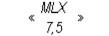

RÉSUMÉ DES CARACTÉRISTIQUES DU PRODUIT
ANSM - Mis à jour le : 25/03/2014
MELOXICAM TEVA 7,5 mg, comprimé
2. COMPOSITION QUALITATIVE ET QUANTITATIVE
Méloxicam ....................................................................................................................................... 7,5 mg
Pour un comprimé.
Excipient: lactose monohydraté (77,20 mg)
Pour la liste complète des excipients, voir rubrique 6.1.
Comprimé.
Comprimé rond et plat à bord biseauté, jaune marbré, gravé sur une face et présentant une barre de cassure sur l'autre face.
La barre de cassure n'est là que pour faciliter la prise du comprimé, elle ne le divise pas en deux demi-doses égales.
4.1. Indications thérapeutiques
Traitement symptomatique de courte durée des poussées aiguës d'arthrose.
Traitement symptomatique au long cours de la polyarthrite rhumatoïde et de la spondylarthrite ankylosante.
4.2. Posologie et mode d'administration
La dose quotidienne doit être prise en une seule fois, avec de l'eau ou un autre liquide, au cours d'un repas.
La survenue d'effets indésirables peut être minimisée par l'utilisation de la dose la plus faible possible pendant la durée de traitement la plus courte nécessaire au soulagement des symptômes (voir rubrique 4.4).
La nécessité du traitement symptomatique et son efficacité thérapeutique pour le patient doivent être réévaluées périodiquement, en particulier chez les patients atteints d'arthrose.
· Poussées aiguës d'arthrose: 7,5 mg/jour (1 comprimé à 7,5 mg). En cas de besoin, en l'absence d'amélioration, la posologie peut être augmentée à 15 mg/jour (2 comprimés à 7,5 mg).
· Polyarthrite rhumatoïde, spondylarthrite ankylosante: 15 mg par jour (2 comprimés à 7,5 mg) (voir paragraphe « Populations particulières »).
En fonction de l'effet thérapeutique, la dose pourra être réduite à 7,5 mg/jour (1 comprimé à 7,5 mg).
NE PAS DEPASSER LA POSOLOGIE DE 15 mg/JOUR
Populations particulières
Sujets âgés et patients présentant un risque accru d'effets indésirables (voir rubrique 5.2)
En traitement au long cours de la polyarthrite rhumatoïde ou de la spondylarthrite ankylosante chez le sujet âgé, la dose recommandée est de 7,5 mg/jour. Chez les patients présentant un risque accru d'effets indésirables, le traitement devra débuter à la posologie de 7,5 mg par jour (voir rubrique 4.4).
Insuffisance rénale (voir rubrique 5.2)
Chez l'insuffisant rénal hémodialysé, la posologie ne doit pas dépasser 7,5 mg/jour. Aucune réduction de posologie n'est nécessaire chez les patients présentant une insuffisance rénale légère à modérée (soit des patients avec une clairance de la créatinine de plus de 25 ml/min) (pour les patients présentant une insuffisance rénale sévère non dialysée, voir rubrique 4.3).
Insuffisance hépatique (voir rubrique 5.2)
Aucune réduction de posologie n'est nécessaire chez les patients présentant une insuffisance hépatique légère à modérée (pour les patients présentant une insuffisance hépatique sévère, voir rubrique 4.3).
Enfants et adolescents:
Ce médicament ne doit pas être administré chez les enfants et adolescents de moins de 16 ans (voir rubrique 4.3).
Ce médicament existe sous d'autres formes et dosages qui peuvent être plus appropriés.
Ce médicament est contre-indiqué dans les cas suivants:
· 3ème trimestre de la grossesse (voir rubrique 4.6);
· hypersensibilité au méloxicam ou à l'un des excipients, ou hypersensibilité aux molécules d'activité proche telles qu'AINS, aspirine. Ce médicament ne doit pas être administré aux patients ayant développé des phénomènes d'asthme, de polypes nasaux, d'œdème de Quincke ou d'urticaire après administration d'aspirine ou d'autres AINS;
· antécédents d'hémorragie ou de perforation digestive au cours d'un précédent traitement par AINS;
· ulcère peptique évolutif ou récent, antécédents d'ulcère peptique ou d'hémorragie récurrente (2 épisodes distincts ou plus d'hémorragie ou d'ulcération objectivés);
· insuffisance hépato-cellulaire sévère;
· insuffisance rénale sévère non dialysée;
· hémorragies gastro-intestinales, antécédents d'hémorragies cérébrales ou de toute autre nature;
· insuffisance cardiaque sévère.
4.4. Mises en garde spéciales et précautions d'emploi
La survenue d'effets indésirables peut être minimisée par l'utilisation de la dose la plus faible possible pendant la durée de traitement la plus courte nécessaire au soulagement des symptômes (voir rubrique 4.2 et paragraphes « effets gastro-intestinaux » et « effets cardiovasculaires et cérébrovasculaires » ci-dessous).
En cas d'effet thérapeutique insuffisant, il ne faut pas dépasser la dose maximale recommandée, ni associer le traitement à un autre AINS, en raison du risque d'augmentation de la toxicité sans avantage thérapeutique prouvé.
L'utilisation concomitante du méloxicam avec d'autres AINS, y compris les inhibiteurs sélectifs de la cyclooxygénase 2 (cox-2), doit être évitée (voir rubrique 4.5).
L'utilisation du méloxicam n'est pas appropriée pour le traitement des douleurs aigües.
En l'absence d'amélioration après plusieurs jours, le bénéfice du traitement doit être réévalué.
En cas d'antécédents d'œsophagite, de gastrite et/ou d'ulcères gastro-duodénaux, il est recommandé de s'assurer de la guérison complète de ces affections avant d'instaurer le traitement par le méloxicam. Chez les patients traités par le méloxicam et présentant des antécédents de ce type, surveiller systématiquement toute éventuelle apparition de récidives.
Effets gastro-intestinaux
Des hémorragies, ulcérations ou perforations gastro-intestinales parfois fatales, ont été rapportées avec tous les AINS, à n'importe quel moment du traitement, sans qu'il y ait eu nécessairement de signes d'alerte ou d'antécédents d'effets indésirables gastro-intestinaux graves.
Le risque d'hémorragie, d'ulcération ou de perforation gastro-intestinale augmente avec la dose utilisée chez les patients présentant des antécédents d'ulcère, en particulier en cas de complication à type d'hémorragie ou de perforation (voir rubrique 4.3) ainsi que chez le sujet âgé. Chez ces patients, le traitement doit être débuté à la posologie la plus faible possible. Un traitement protecteur de la muqueuse (par exemple misoprostol ou inhibiteur de la pompe à protons) doit être envisagé pour ces patients, comme pour les patients nécessitant un traitement par de faibles doses d'aspirine ou traités par d'autres médicaments susceptibles d'augmenter le risque gastro-intestinal (voir ci dessous et rubrique 4.5).
Les patients présentant des antécédents gastro-intestinaux, surtout s'il s'agit de patients âgés, doivent signaler tout symptôme abdominal inhabituel (en particulier les saignements gastro-intestinaux), notamment en début de traitement.
Une attention particulière doit être portée aux patients recevant des traitements associés susceptibles d'augmenter le risque d'ulcération ou d'hémorragie, comme l'héparine en traitement curatif ou chez les sujets âgés, les anticoagulants tels que la warfarine, ou les autres médicaments anti-inflammatoires non stéroïdiens, y compris l'aspirine donnée à doses anti-inflammatoires (≥ 1 g par prise ou ≥ 3 g par jour) (voir rubrique 4.5).
En cas d'apparition d'hémorragie ou d'ulcération survenant chez un patient recevant du méloxicam, le traitement doit être arrêté.
Les AINS doivent être administrés avec prudence et sous étroite surveillance chez les malades présentant des antécédents de maladies gastro-intestinales (recto-colite hémorragique, maladie de Crohn), en raison d'un risque d'aggravation de la pathologie (voir rubrique 4.8).
Effets cardiovasculaires et cérébrovasculaires
Une surveillance adéquate et des recommandations sont requises chez les patients présentant des antécédents d'hypertension et/ou d'insuffisance cardiaque légère à modérée, des cas de rétention hydrosodée et d'œdème ayant été rapportés en association au traitement par AINS.
Une surveillance clinique de la pression artérielle chez les patients à risque est recommandée au cours du traitement par le méloxicam, et plus particulièrement au moment de l'initiation du traitement.
Des études cliniques et des données épidémiologiques suggèrent que l'utilisation de certains AINS, y compris le méloxicam, (surtout lorsqu'ils sont utilisés à doses élevées et sur une longue durée) peut être associée à une légère augmentation du risque d'événements thrombotiques artériels (par exemple, infarctus du myocarde ou accident vasculaire cérébral). Les données sont actuellement insuffisantes pour écarter cette augmentation du risque pour le méloxicam.
Les patients présentant une hypertension non contrôlée, une insuffisance cardiaque congestive, une cardiopathie ischémique, une maladie artérielle périphérique, et/ou ayant un antécédent d'accident vasculaire cérébral (y compris l'accident ischémique transitoire) ne devront être traités par le méloxicam qu'après un examen attentif.
Une attention similaire doit être portée avant toute initiation d'un traitement à long terme chez les patients présentant des facteurs de risques pour les pathologies cardiovasculaires (comme une hypertension, une hyperlipidémie, un diabète ou une consommation tabagique).
Réactions cutanées
Des réactions cutanées graves, dont certaines d'évolution fatale, incluant des dermatites exfoliatives, des syndromes de Stevens-Johnson et des syndromes de Lyell ont été très rarement rapportées lors de traitements par AINS (voir rubrique 4.8).
L'incidence de ces effets indésirables semble plus importante en début de traitement, le délai d'apparition se situant, dans la majorité des cas, pendant le premier mois de traitement. Le traitement par méloxicam devra être arrêté dès l'apparition d'un rash cutané, de lésions des muqueuses ou de tout autre signe d'hypersensibilité.
Paramètres des fonctions hépatiques et rénales
Comme avec la plupart des AINS, des élévations occasionnelles des taux des transaminases sériques, des augmentations de la bilirubinémie ou d'autres indicateurs des fonctions hépatiques, des augmentations de la créatininémie et de l'acide urique et des troubles d'autres paramètres biologiques ont été observés. Dans la majorité des cas, il s'agissait d'anomalies transitoires et discrètes. Si l'anomalie s'avère significative ou persistante, il faut interrompre l'administration du méloxicam et prescrire les examens appropriés.
Insuffisance rénale fonctionnelle
Les AINS peuvent induire une insuffisance rénale fonctionnelle par réduction de la filtration glomérulaire, en raison de leur action inhibitrice sur l'effet vasodilatateur des prostaglandines rénales. Cet effet indésirable est dose-dépendant. Une surveillance étroite de la diurèse et de la fonction rénale est recommandée lors de l'initiation du traitement ou en cas d'augmentation de la dose chez les patients présentant les facteurs de risque suivants:
· patient âgé,
· traitements concomitants par des inhibiteurs de l'enzyme de conversion de l'angiotensine, antagonistes de l'angiotensine II, sartans, diurétiques (voir rubrique 4.5),
· hypovolémie (quelle qu'en soit la cause),
· insuffisance cardiaque congestive,
· syndrome néphrotique,
· néphropathie lupique,
· insuffisance hépatique sévère (albumine sérique < 25 g/l ou score de Child-Pugh ≥ 10).
Dans de rares cas, les AINS peuvent entraîner une néphrite interstitielle, une glomérulonéphrite, une nécrose médullaire rénale ou un syndrome néphrotique.
La dose de méloxicam ne doit pas dépasser 7,5 mg chez les patients ayant une insuffisance rénale à un stade terminal et qui sont hémodialysés. Aucune réduction de la dose n'est nécessaire chez les patients ayant une insuffisance rénale légère ou modérée (c'est-à-dire chez les patients ayant une clairance de la créatinine supérieure à 25 ml/min).
Rétention sodique, potassique et hydrique
Une rétention sodique, potassique et hydrique et une interférence sur les effets natriurétiques des diurétiques peut survenir avec l'utilisation d'AINS. De plus, une diminution de l'effet antihypertenseur des médicaments antihypertenseurs peut survenir (voir rubrique 4.5). En conséquence, des œdèmes, une insuffisance cardiaque ou une hypertension peuvent survenir ou être aggravés chez les patients prédisposés. Une surveillance clinique est donc nécessaire pour les patients à risque (voir rubriques 4.2 et 4.3).
Hyperkaliémie
Une hyperkaliémie peut être favorisée en cas de diabète ou lors de traitement concomitant par des médicaments connus pour leur effet hyperkaliémant (voir rubrique 4.5). Une surveillance régulière des taux de potassium est recommandée dans ces cas.
Autres mises en garde et précautions
Les effets indésirables sont souvent plus mal tolérés chez les sujets âgés, fragiles ou affaiblis qui nécessitent donc une surveillance accrue. Comme avec les autres AINS, la prudence est de rigueur chez les sujets âgés, dont les fonctions rénale, hépatique et cardiaque sont fréquemment altérées.
Les sujets âgés présentent un risque accru d'effets indésirables aux AINS, en particulier d'hémorragie gastro-intestinale et de perforations pouvant être fatales (voir rubrique 4.2).
Comme tout AINS, le méloxicam peut masquer les symptômes d'une infection sous-jacente.
Le méloxicam, comme tout médicament inhibiteur de la synthèse des cyclooxygénases et des prostaglandines, peut altérer la fertilité. Son utilisation n'est pas recommandée chez les femmes qui souhaitent concevoir. Chez les femmes qui présentent des difficultés pour concevoir, ou chez lesquelles des investigations sur la fonction de reproduction sont en cours, un arrêt du traitement par le méloxicam doit être envisagé.
Ce médicament contient du lactose. Son utilisation est déconseillée chez les patients présentant une intolérance au galactose, un déficit en lactase de Lapp ou un syndrome de malabsorption du glucose (maladies héréditaires rares).
4.5. Interactions avec d'autres médicaments et autres formes d'interactions
Les études d'interaction n'ont été effectuées que chez l'adulte.
Interactions pharmacodynamiques
+ Autres Anti-Inflammatoires Non Stéroïdiens (AINS) et aspirine ≥ 3 grammes/jour
L'administration concomitante de méloxicam avec d'autres AINS, y compris l'aspirine donnée à doses anti-inflammatoires (≥ 1 g par prise ou ≥ 3 g par jour) n'est pas recommandée (voir rubrique 4.4).
+ Corticoïdes (par exemple les glucocorticoïdes)
L'utilisation concomitante avec les corticoïdes nécessite de la prudence en raison de l'augmentation du risque d'ulcération et d'hémorragie gastro-intestinale.
+ Anticoagulants et héparine administrée chez le sujet âgé ou à doses curatives
Risque considérablement accru d'hémorragie, par inhibition de la fonction plaquettaire et agression de la muqueuse gastro-duodénale.
Les AINS sont susceptibles de majorer les effets des anticoagulants, comme la warfarine (voir rubrique 4.4). L'administration concomitante d'AINS et d'anticoagulants ou d'héparine administrée chez le sujet âgé ou à doses curatives n'est pas recommandée (voir rubrique 4.4).
Dans les autres cas, la prudence est nécessaire lors de l'administration d'héparine en raison d'un risque hémorragique accru. Une surveillance étroite de l'INR est nécessaire si l'association ne peut être évitée.
+ Thrombolytiques et anti-agrégants plaquettaires
Risque accru d'hémorragie, par inhibition de la fonction plaquettaire et agression de la muqueuse gastro-duodénale.
+ Inhibiteurs sélectifs de la recapture de la sérotonine (ISRS)
Augmentation du risque d'hémorragie gastro-intestinale.
+ Diurétiques, inhibiteurs de l'enzyme de conversion de l'angiotensine et antagonistes des récepteurs de l'angiotensine II
Les AINS peuvent réduire l'effet des diurétiques et d'autres agents antihypertenseurs. Chez certains patients présentant une fonction rénale altérée (par exemple des patients déshydratés ou certains patients âgés), l'association d'un inhibiteur de l'enzyme de conversion de l'angiotensine ou d'un antagoniste des récepteurs de l'angiotensine II à des traitements inhibant la cyclo-oxygénase peut entraîner une nouvelle détérioration de la fonction rénale, y compris une insuffisance rénale aiguë, généralement réversible. En conséquence, toute association de ce type doit être administrée avec prudence, en particulier chez le sujet âgé. Les patients doivent être suffisamment hydratés et une surveillance de la fonction rénale doit être envisagée lors de l'initiation du traitement concomitant puis à intervalles réguliers (voir rubrique 4.4).
+ Autres agents anti-hypertenseurs (y compris les bêta-bloquants)
Comme dans le cas des inhibiteurs de l'enzyme de conversion et des antagonistes des récepteurs de l'angiotensine II, une diminution de l'effet anti-hypertenseur des bêta-bloquants peut survenir (due à l'inhibition des prostaglandines à effet vasodilatateur).
+ Inhibiteurs de la calcineurine (par exemple ciclosporine, tacrolimus)
Les AINS peuvent accroître la nephrotoxicité des inhibiteurs de la calcineurine, par le biais d'effets dépendant des prostaglandines rénales. En cas d'association, la fonction rénale doit être surveillée, en particulier chez le sujet âgé.
+ Dispositifs intra-utérins
Les AINS peuvent diminuer l'efficacité des dispositifs intra-utérins. Cette diminution de l'efficacité des dispositifs intra-utérins préalablement rapportée pour des traitements par AINS nécessite toutefois d'être confirmée.
Interactions pharmacocinétiques (effet du méloxicam sur la pharmacocinétique d'autres médicaments)
+ Lithium
Les AINS augmentent la lithiémie par diminution de l'excrétion rénale de lithium qui peut atteindre des valeurs toxiques. L'administration concomitante de lithium et d'AINS n'est pas recommandée (voir rubrique 4.4). Si cette association ne peut être évitée, une surveillance étroite de la lithiémie est nécessaire lors de l'initiation, au cours et à l'arrêt du traitement par le méloxicam.
+ Méthotrexate
Les AINS peuvent réduire l'excrétion tubulaire du méthotrexate entraînant une augmentation des concentrations plasmatiques en méthotrexate. En conséquence, l'administration d'AINS n'est pas recommandée chez les patients traités par de fortes doses de méthotrexate (plus de 15 mg/semaine) (voir rubrique 4.4).
Ce risque d'interaction entre les AINS et le méthotrexate doit également être pris en compte chez les patients traités par des doses plus faibles de méthotrexate, en particulier en cas d'altération de la fonction rénale.
En cas d'association, une surveillance de la numération sanguine et de la fonction rénale sont nécessaires. Des précautions particulières s'imposent en cas d'administration simultanée du méthotrexate et de l'AINS sur trois jours consécutifs, en raison du risque de toxicité liée à l'augmentation des taux plasmatiques de méthotrexate.
Bien que la pharmacocinétique du méthotrexate (15 mg/semaine) ne soit pas significativement modifiée par l'administration concomitante de méloxicam, il faut tenir compte du risque d'augmentation de la toxicité hématologique du méthotrexate en cas d'administration d'AINS (voir plus haut) (voir rubrique 4.8).
Interactions pharmacocinétiques (effet d'autres médicaments sur la pharmacocinétique du méloxicam)
+ Cholestyramine
La cholestyramine accélère l'élimination du méloxicam en stoppant la circulation entérohépatique. Cet effet entraîne une augmentation de la clairance du méloxicam de 50 % et une diminution de la demi-vie à 13±3 heures. Cette interaction présente une significativité clinique.
Aucune interaction pharmacocinétique directe, présentant une significativité clinique, n'a été détectée avec les antiacides, la cimétidine ou la digoxine.
L'inhibition de la synthèse des prostaglandines peut avoir un effet délétère sur la grossesse et/ou le développement embryonnaire ou fœtal. Les données issues des études épidémiologiques, suite à l'utilisation d'un inhibiteur de la synthèse des prostaglandines au premier stade de la grossesse, suggèrent une augmentation du risque de fausse-couche, de malformation cardiaque et de laparoschisis. Le risque absolu de malformation cardiaque est augmenté de moins de 1 % à environ 1,5 %. Ce risque est supposé augmenter en fonction de la dose et de la durée du traitement.
Chez l'animal, l'administration d'un inhibiteur de la synthèse des prostaglandines entraîne une augmentation des pertes pré- et post-implantatoires et de la mortalité embryo-fœtale. De plus, une augmentation de l'incidence de diverses malformations, y compris cardiovasculaires, a été observée chez des animaux ayant reçu un inhibiteur de la synthèse des prostaglandines au cours de la période d'organogénèse.
A moins d'une nécessité clairement établie, l'utilisation du méloxicam est à éviter au cours du premier et du deuxième trimestre de la grossesse.
En cas d'utilisation du méloxicam chez une femme souhaitant concevoir, ou au cours du premier ou du deuxième trimestre de la grossesse, la dose et la durée du traitement doivent être maintenues aussi faibles que possible.
Au cours du troisième trimestre, tous les inhibiteurs de la synthèse des prostaglandines peuvent exposer:
· le fœtus
o à une toxicité cardiopulmonaire (avec fermeture prématurée du canal artériel et hypertension pulmonaire),
o à une altération de la fonction rénale pouvant progresser vers une insuffisance rénale avec oligohydramnios,
· la mère et l'enfant, à la fin de la grossesse
o à une augmentation du temps de saignement, un effet anti-agrégant, pouvant survenir même à très faible dose,
o à une inhibition des contractions utérines entraînant un travail retardé ou prolongé.
En conséquence, le méloxicam est contre-indiqué au cours du troisième trimestre de la grossesse.
Bien qu'aucune donnée spécifique ne soit disponible pour le méloxicam, les AINS sont connus pour passer dans le lait maternel. L'administration du méloxicam n'est donc pas recommandée en cas d'allaitement.
4.7. Effets sur l'aptitude à conduire des véhicules et à utiliser des machines
Aucune étude spécifique sur l'aptitude à conduire et à utiliser des machines n'a été effectuée.
Cependant, compte tenu de son profil pharmacodynamique et des effets indésirables rapportés, il est peu probable que le méloxicam affecte l'aptitude à conduire ou à utiliser des machines. Toutefois, en cas de survenue de troubles de la vision, de somnolence, de vertiges ou autres troubles du système nerveux central, il est recommandé de s'abstenir de conduire ou d'utiliser des machines.
Les données des études cliniques et épidémiologiques suggèrent que l'utilisation de certains AINS (en particulier à hautes doses et sur le long terme) peut être associée à une légère augmentation du risque de présenter un accident artériel thrombotique (par exemple infarctus du myocarde ou accident vasculaire cérébral) (voir rubrique 4.4).
Œdème, hypertension et insuffisance cardiaque ont été rapportés au cours d'un traitement par AINS.
Les effets indésirables les plus fréquemment observés sont de nature gastro-intestinale. Des ulcères peptiques, perforations ou hémorragies gastro-intestinales, parfois fatales, peuvent survenir, en particulier chez le sujet âgé, (voir rubrique 4.4). Des nausées, vomissements, diarrhées, flatulences, constipation, dyspepsie, stomatite ulcérative, douleur abdominale, melæna, hématémèse, exacerbation d'une recto-colite ou d'une maladie de Crohn (voir rubrique 4.4) ont été rapportées à la suite de l'administration d'AINS. Moins fréquemment, des gastrites ont été observées.
Les fréquences des évènements rapportés ci-dessous sont basées sur les taux de survenue des effets indésirables observés au cours de 27 essais cliniques, avec une durée de traitement d'au moins 14 jours. Les données sont issues d'essais cliniques réalisés sur 15197 patients traités par des doses orales quotidiennes de 7,5 ou 15 mg de méloxicam sous forme de comprimés ou de gélules sur des périodes allant jusqu'à 1 an.
Les effets indésirables mis en évidence lors de notifications spontanées après la mise sur le marché du produit sont également mentionnés.
Les évènements indésirables ont été classés en fonction de leur incidence en utilisant la classification suivante: très fréquent (≥ 1/10); fréquent (≥ 1/100, < 1/10); peu fréquent (≥ 1/1 000, < 1/100); rare (≥ 1/10 000, < 1/1 000); très rare (< 1/10 000).
b) Tableau des effets indésirables
Troubles sanguins et du système lymphatique
· Peu fréquent: anémie.
· Rare: anomalies de la numération de la formule sanguine (incluant numération différentielle des globules blancs): leucopénie, thrombopénie.
· De très rare cas d'agranulocytose ont été rapportés (voir section c)
Troubles du système immunitaire
· Peu fréquent: réactions allergiques autres que réactions anaphylactiques/anaphylactoïdes.
· Inconnu: réactions anaphylactiques/anaphylactoïdes.
Troubles psychiatriques
· Rare: humeur altérée, cauchemars.
· Inconnu: état confusionnel, désorientation.
Troubles du système nerveux
· Fréquent: céphalées.
· Peu fréquent: étourdissements, somnolence.
Troubles oculaires
· Rare: troubles de la vue, notamment vision floue, conjonctivite.
Affections de l'oreille et du labyrinthe
· Peu fréquent: vertiges.
· Rare: acouphène.
Troubles cardiaques
· Rare: palpitations.
Une insuffisance cardiaque a été rapportée en association avec un traitement par les AINS.
Troubles vasculaires
· Peu fréquent: pression artérielle augmentée (voir rubrique 4.4), flush.
Troubles respiratoires, thoraciques et médiastinaux
· Rare: asthme chez certains sujets allergiques à l'acide acétylsalicylique ou à d'autres AINS.
Troubles gastro-intestinaux
· Très fréquent: dyspepsies, nausées, vomissements, douleurs abdominales, constipation, flatulence, diarrhées.
· Peu fréquent: hémorragies gastro-intestinales occultes ou macroscopiques, stomatite, gastrite, éructation.
· Rare: colite, ulcères gastro-duodénaux, œsophagites.
· Très rare: perforation gastro-intestinale.
Des hémorragies, ulcérations ou perforations gastro-intestinales peuvent parfois être sévères et potentiellement fatales, en particulier chez le sujet âgé (voir rubrique 4.4).
Troubles hépatobiliaires
· Peu fréquent: anomalies de la fonction hépatiques (par exemple, élévation des transaminases ou de la bilirubine).
· Très rare: hépatite.
Troubles cutanés et du tissu sous-cutané
· Peu fréquent: angiœdème, prurit, éruption cutanée.
· Rare: syndrome de Stevens-Johnson, syndrome de Lyell, urticaire.
· Très rare: dermatose bulleuse, érythème polymorphe.
· Inconnu: réaction de photosensibilité.
Troubles rénaux et des voies urinaires
· Peu fréquent: rétention sodique et hydrique, hyperkaliémie (voir rubriques 4.4 et 4.5), anomalies des tests de la fonction rénale (augmentation de la créatinine sérique et/ou de l'urée sérique).
· Rare: insuffisance rénale aiguë en particulier chez les patients à risque (voir rubrique 4.4).
Troubles généraux et anomalies au site d'administration
· Peu fréquent: œdèmes, y compris œdème des membres inférieurs.
c) Informations concernant des cas individuels graves ou des réactions particulièrement fréquentes
De très rares cas isolés d'agranulocytose ont été rapportés chez des patients traités par méloxicam et d'autres médicaments potentiellement myélotoxiques (voir rubrique 4.5).
d) Effets indésirables non observés à ce jour avec le médicament, mais généralement connus pour être liés à l'administration d'autres produits de la même classe
Lésions rénales organiques entraînant une insuffisance rénale aiguë: de très rares cas de néphrite interstitielle, nécrose tubulaire aiguë, syndrome néphrotique et nécrose des papilles rénales ont été rapportés (voir rubrique 4.4).
En cas de surdosage aigu aux AINS, les symptômes sont limités à une léthargie, une somnolence, des nausées, des vomissements, des douleurs épigastriques, généralement réversibles avec un traitement adapté. Des hémorragies gastro-intestinales peuvent survenir. Un surdosage sévère peut conduire à une hypertension, une insuffisance rénale aiguë, une atteinte hépatique, une détresse respiratoire, un coma, des convulsions, un collapsus cardio-vasculaire et un arrêt cardiaque. Des réactions anaphylactoïdes ont été rapportées au cours de traitements par AINS et peuvent survenir en cas de surdosage.
En cas de surdosage aux AINS, un traitement symptomatique adapté doit être instauré. Lors d'un essai clinique, une accélération de l'élimination du méloxicam a été mise en évidence suite à l'administration par voie orale de cholestyramine (4 g, 3 fois par jour).
5. PROPRIETES PHARMACOLOGIQUES
5.1. Propriétés pharmacodynamiques
Classe Pharmacothérapeutique: Anti-inflammatoire non stéroïdien, Oxicam, Code ATC: M01AC06.
Le méloxicam est un anti-inflammatoire non stéroïdien (AINS) de la famille des oxicams, doté de propriétés anti-inflammatoires, analgésiques et antipyrétiques.
L'activité anti-inflammatoire du méloxicam a été démontrée dans des modèles classiques d'inflammation. Comme avec les autres AINS, son mécanisme d'action précis reste inconnu.
Cependant, il existe au moins un mode d'action commun à tous les AINS, y compris le méloxicam: l'inhibition de la biosynthèse des prostaglandines, médiateurs connus de l'inflammation.
5.2. Propriétés pharmacocinétiques
Le méloxicam est bien absorbé au niveau du tractus gastro-intestinal et présente une biodisponibilité absolue de 89 % après administration orale sous forme de gélule. La bioéquivalence a été établie entre les gélules, les comprimés et la suspension buvable.
Après administration d'une dose unique de méloxicam, les concentrations plasmatiques maximales moyennes sont atteintes en 2 heures pour la suspension buvable et en 5 à 6 heures pour les formes orales solides (comprimés et gélules).
Après administration de doses réitérées, l'état d'équilibre est atteint en 3 à 5 jours. Lors d'une administration quotidienne, les concentrations plasmatiques varient entre 0,4 à 1,0 µg/ml pour une dose de 7,5 mg et 0,8 à 2,0 µg/ml pour une dose de 15 mg (Valeurs des Cmin et Cmax à l'état d'équilibre), avec une amplitude assez faible. Les concentrations plasmatiques maximales à l'état d'équilibre sont atteintes en 5 heures à 6 heures pour les formes comprimés, gélules et suspension buvable respectivement. Lors de traitements en continu sur des périodes de plus d'un an, les concentrations plasmatiques sont comparables à celles observées à l'état d'équilibre lors de l'initiation du traitement. L'absorption du méloxicam après administration orale n'est pas modifiée en cas d'administration au milieu d'un repas.
Distribution
Le méloxicam est très fortement lié aux protéines plasmatiques, essentiellement à l'albumine (99 %). Il pénètre dans le liquide synovial où il atteint des concentrations correspondant environ à la moitié de la concentration plasmatique. Le volume de distribution est faible, de 11 litres en moyenne. Les variations interindividuelles sont de l'ordre de 30 à 40 %.
Métabolisme
Le méloxicam est métabolisé de façon intense au niveau hépatique. Quatre métabolites différents, tous pharmacologiquement inactifs, ont été identifiés dans l'urine. Le métabolite principal, le 5'-carboxyméloxicam (correspondant à 60 % de la dose) est formé par oxydation d'un métabolite intermédiaire, le 5'-hydroxyméthylméloxicam, qui est également excrété dans une moindre mesure (correspondant à 9 % de la dose). Des études in vitro suggèrent que le CYP2C9 joue un rôle important dans cette voie métabolique, avec une contribution mineure de l'isoenzyme CYP3A4. L'activité peroxydase est probablement à l'origine des deux autres métabolites, qui correspondent respectivement à 16 et 4 % de la dose administrée.
Elimination
Le méloxicam est éliminé principalement sous forme de métabolites, pour moitié par voie urinaire et pour moitié par voie fécale. Moins de 5 % de la dose quotidienne sont excrétés sous forme inchangée dans les faeces, seules des traces de méloxicam inchangé sont retrouvées dans les urines.
La demi-vie moyenne d'élimination est de l'ordre de 20 heures. La clairance plasmatique totale est de 8 ml/min en moyenne.
Linéarité/Non-linéarité
Les paramètres pharmacocinétiques du méloxicam sont linéaires entre les doses thérapeutiques de 7,5 à 15 mg après administration par voie orale ou intramusculaire.
Populations particulières
Insuffisance hépatique/rénale
Une insuffisance hépatique ou rénale à un stade léger à modéré n'a pas d'influence significative sur les paramètres pharmacocinétiques du méloxicam. Dans les cas d'insuffisance rénale sévère, l'augmentation du volume de distribution peut entraîner une augmentation des concentrations de la fraction libre de méloxicam. La dose quotidienne de 7,5 mg ne doit pas être dépassée dans ce cas (voir rubrique 4.2).
Patients âgés
La clairance plasmatique moyenne à l'état d'équilibre chez les sujets âgés est légèrement plus faible que celle observée chez les sujets plus jeunes.
5.3. Données de sécurité préclinique
Le profil toxicologique du méloxicam observé lors des études pré-cliniques est identique à celui des AINS: ulcérations et érosions gastro-intestinales, nécrose des papilles rénales à doses élevées lors de l'administration chronique dans deux espèces animales.
Chez l'animal, l'administration d'inhibiteur de la synthèse des prostaglandines a montré une augmentation de la perte pré et post implantation et une augmentation de la létalité embryo-fœtale. De plus, une augmentation de l'incidence de diverses malformations, incluant des malformations cardiovasculaires ont été rapportées chez l'animal traité par des inhibiteurs de la synthèse des prostaglandines durant la période de l'organogenèse.
Des études de reproduction chez le rat sous méloxicam par voie orale, ont montré une diminution de l'ovulation, une diminution des implantations, et des effets embryotoxiques (augmentation des fausses couches) à dose maternotoxique de 1 mg/kg et plus.
Les doses concernées dépassent les doses cliniques (7,5-15 mg) d'un facteur 10 à 5 sur une base mg/kg (pour une personne de 75 kg).
Des effets fœto-toxiques à la fin de la gestation, communs à tous les inhibiteurs de la synthèse des prostaglandines, ont été observés. Aucun effet mutagène n'a été observé lors des tests in vitro et in vivo. Le méloxicam ne s'est montré carcinogène ni chez le rat, ni chez la souris, à des doses nettement supérieures à celles utilisées en clinique.
Citrate de sodium, lactose monohydraté, cellulose microcristalline (E460), povidone K-30, silice colloïdale anhydre, crospovidone, stéarate de magnésium.
Sans objet.
3 ans.
6.4. Précautions particulières de conservation
Pas de précautions particulières de conservation.
6.5. Nature et contenu de l'emballage extérieur
10, 14 (2 x 7), 20, 28, 30, 50, 60, 100 ou 500 (10 x 50) comprimés sous plaquettes thermoformées (PVC/PVDC/Aluminium).
Toutes les présentations peuvent ne pas être commercialisées.
6.6. Précautions particulières d’élimination et de manipulation
Pas d'exigences particulières.
7. TITULAIRE DE L’AUTORISATION DE MISE SUR LE MARCHE
TEVA SANTE
110, ESPLANADE DU GENERAL DE GAULLE
92931 PARIS LA DEFENSE CEDEX
8. NUMERO(S) D’AUTORISATION DE MISE SUR LE MARCHE
· 370 938-3: 10 comprimés sous plaquettes thermoformées (PVC/PVDC/Aluminium).
· 370 940-8: 14 comprimés sous plaquettes thermoformées (PVC/PVDC/Aluminium).
· 370 941-4: 20 comprimés sous plaquettes thermoformées (PVC/PVDC/Aluminium).
· 370 942-0: 28 comprimés sous plaquettes thermoformées (PVC/PVDC/Aluminium).
· 370 943-7: 30 comprimés sous plaquettes thermoformées (PVC/PVDC/Aluminium).
· 567 850-5: 50 comprimés sous plaquettes thermoformées (PVC/PVDC/Aluminium).
· 370 944-3: 60 comprimés sous plaquettes thermoformées (PVC/PVDC/Aluminium).
· 567 851-1: 100 comprimés sous plaquettes thermoformées (PVC/PVDC/Aluminium).
· 567 852-8: 500 comprimés sous plaquettes thermoformées (PVC/PVDC/Aluminium).
9. DATE DE PREMIERE AUTORISATION/DE RENOUVELLEMENT DE L’AUTORISATION
[à compléter par le titulaire]
10. DATE DE MISE A JOUR DU TEXTE
[à compléter par le titulaire]
Sans objet.
12. INSTRUCTIONS POUR LA PREPARATION DES RADIOPHARMACEUTIQUES
Sans objet.
Liste I.